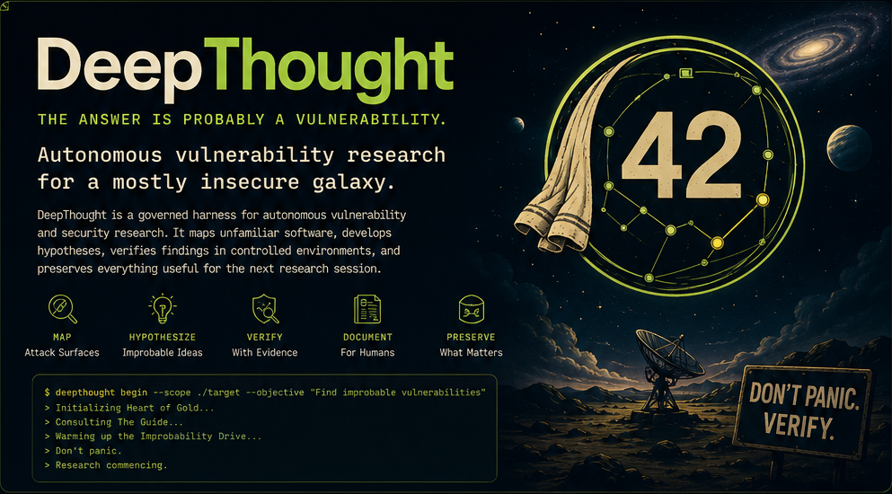

A governed harness for autonomous vulnerability research — it maps unfamiliar software, develops hypotheses, verifies findings under human control, and preserves everything useful for the next research session.
Give it an authorized target, a defined scope, and an objective. It investigates until it reaches evidence, a safety gate, or the limit of its budget — independently, without becoming recklessly independent.
Attack surfaces and trust boundaries.
Generate and prioritize improbable ideas.
Reproduce in controlled environments.
Prepare disclosure-ready evidence.
Durable memory for better research.
Formal machine-readable states drive standards compatibility. The Guide translates them for humans — the playful names never replace the precise records.
Initial observation or candidate
Plausible vulnerability hypothesis
Active investigation
Interesting, not exploitable yet
Verified with reproducible evidence
Out of scope, upstream, deferred
High-impact, needs human review
Unsafe input becomes a controlled refusal, not an accidental adventure.
DeepThought runs early research programs. The vuln-rediscovery skill builds a static detector for a vulnerability class — calibrated on one seed CVE, graded on held-out CVEs it never saw, using real source at pinned vulnerable and patched SHAs. Twelve classes are measured today at a preliminary ~79% mean held-out generalization, versioned under a regression bar. XXE sits at an honest 1/3 — reported, not hidden.
Install, register an authorized target, validate the store, and prepare local artifacts. Nothing is transmitted.
# install git clone https://github.com/MahdiHedhli/DeepThought.git cd DeepThought uv venv --python 3.12 .venv uv pip install --python .venv -e ".[dev]" # run a typed research session .venv/bin/deepthought playbook new-project --name "PHP src" \ --git-url https://github.com/php/php-src --basis permissive_oss --scope ext/soap # validate state, schemas, lifecycle, conformance .venv/bin/deepthought check # emit prepared local artifacts — transmit nothing .venv/bin/deepthought publish